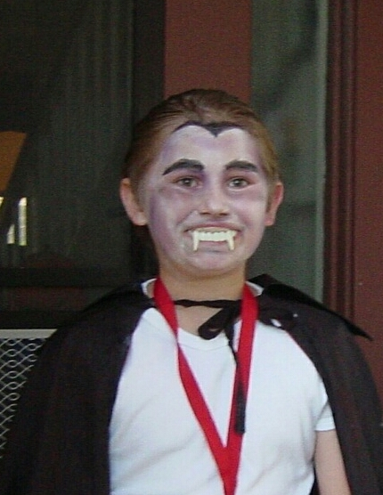
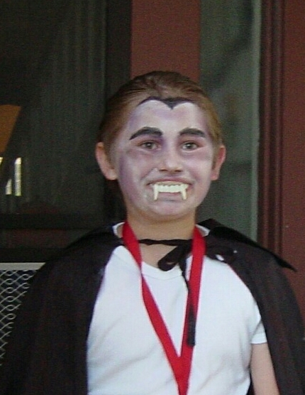

UX Designer & illustrator delivering quality media products to end users


 

Storyteller with an illustration & sequential art background looking to apply expertise to UX writing and content strategy. BFA from Minnesota State University Moorhead and Certificate in UX/UI Design from University of Minnesota.
My strengths in are in writing, visual communication, and task management. I began developing these skills as an undergrad when I wrote, designed, and self published a 360 page graphic novel. Motivated by completing projects from beginning to end and meeting personal goals, I set clear weekly deadlines for myself an kept a consistent web-publishing schedule throughout four years. I have applied this discipline to my professional work ever since and want to bring those skills into UX.
As a creative writer and illustrator, I’m interested in media content platforms and the way entertainment is delivered. These platforms are constantly evolving and I’m excited to follow the growing demand for UX roles as our entertainment delivery systems change.
Skills